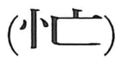

忙

Kun: isogashii, sewashii | On: bou
busy ・ hurried ・ absent-minded
Explanation
A phono-semantic character with 亡 as the phonetic element, giving the on reading bou and evoking a sense of being “lost” or away. In early usage it did not mean “busy,” but described a vacant, absent-minded state: the Liezi, Yang Zhu chapter has 子産忙然无以应之, where Zi Chan stands dazed and cannot reply. From this sense of mental vacancy, the later, now-familiar meanings “busy” and “hurried” developed, becoming common from the Tang period onward.